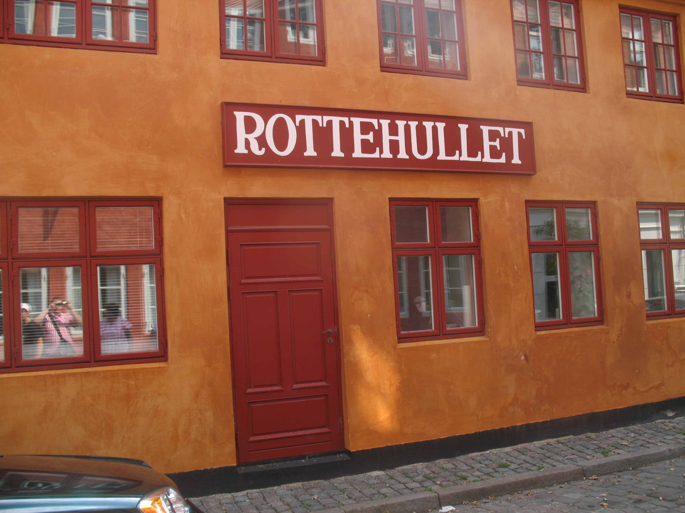

Rottehullet, som befinder sig på amgergade, er et gammelt værtshus, som den dag i dag stadig bliver anvendt spm værtshus. I dag er de fleste kunder stamfolk, men mange unge kommer forbi og får sig en øl eller to, inden de tager videre i byen. Serien ”Huset på Christianshavn” blev bl.a. optaget ved Rottehullet, og det har gjort huset til et eftertraktet værtshus.
